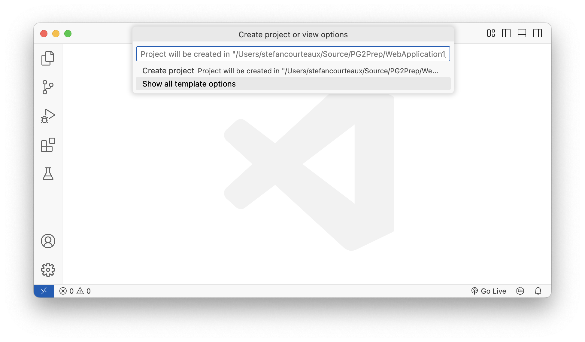
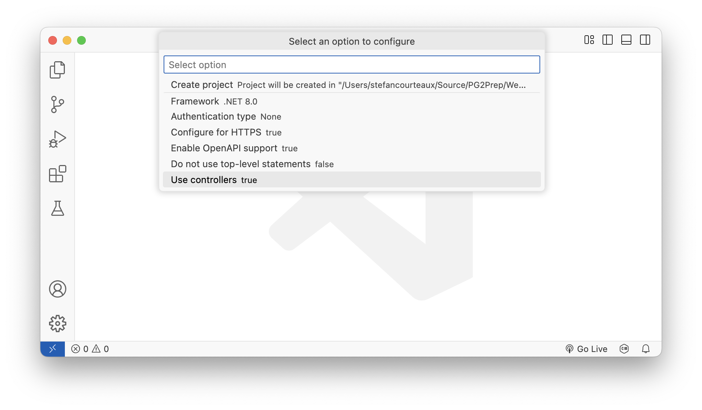
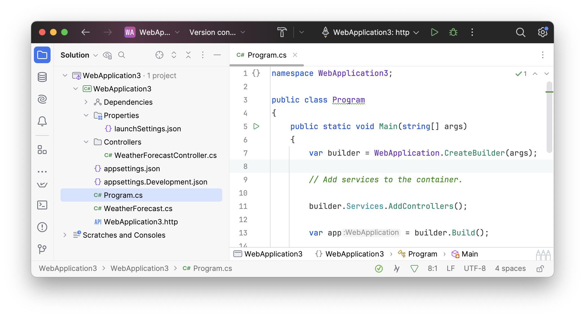

Customers & Products
Solution
We maken een nieuwe solution aan op basis van de webapi template met Controllers.
Templates
dotnet new list
dotnet new install TemplatePackageNaamHier (1)
| 1 | Template packages van Microsoft staan hier opgelijst. |
dotnet new webapi --help
dotnet new webapi --use-controllers -o ProjectNaamHier
| IDE’s hebben schermpjes die deze parameters voorstellen als checkboxes of vlagjes, maar in de achtergrond worden dezelfde templates gebruikt. Hoe beter je begrijpt wat er achter de schermen gebeurt, hoe minder het uitmaakt in welke tool je aan het coden bent. |


Program File

De Program.cs file bevat het nodige om een webapi op te starten.
public class Program
{
public static void Main(string[] args)
{
var builder = WebApplication.CreateBuilder(args);
// Add services to the container.
builder.Services.AddControllers(); (1)
var app = builder.Build();
// Configure the HTTP request pipeline.
app.UseHttpsRedirection();
app.MapControllers(); (2)
app.Run();
}
}| 1 | Laadt een aantal services die vaak gebruikt worden door ApiControllers. |
| 2 | Mapt routes van de gevonden ApiControllers. |
Afhankelijk van de exacte template settings die je koos, kan er ook een WeatherForecastController.cs aanwezig zijn. Dit voorbeeld van Microsoft is handig als referentie.
Customers
Contracten
We maken onderscheid tussen een CustomerRequestContract en CustomerResponseContract. Het request contract wordt door de client naar de server gezonden. Het response contract wordt door de server naar de client gezonden.
public class CustomerRequestContract
{
[MaxLength(30)] (1)
public string FirstName { get; set; }
[MaxLength(30)]
public string LastName { get; set; }
public DateTime DateOfBirth { get; set; }
[EmailAddress] (2)
public string Email { get; set; }
[MaxLength(20)]
public string? TaxIdentificationNumber { get; set; }
[MaxLength(50)]
public string Addressline1 { get; set; }
[MaxLength(50)]
public string Addressline2 { get; set; }
[MaxLength(50)]
public string? Addressline3 { get; set; }
[MaxLength(20)]
public string Country { get; set; }
}| 1 | Deze validatieregel zal afgedwongen worden tijdens modelbinding. |
| 2 | Gebruik ingebouwde mogelijkheden wanneer gepast. |
In de context van dit voorbeeld is het enige fundamentele verschil tussen request- en response contract de aanwezigheid van het id veld.
| Het is niet omdat dingen in de praktijk (initieel) op elkaar lijken, dat ze conceptueel hetzelfde zijn. Gebruik nooit een enkele klasse om twee dingen voor te stellen die conceptueel verschillend zijn. |
public class CustomerResponseContract
{
public int Id { get; set; }
public string FirstName { get; set; }
public string LastName { get; set; }
public DateTime DateOfBirth { get; set; }
public string Email { get; set; }
public string? TaxIdentificationNumber { get; set; }
public string Addressline1 { get; set; }
public string Addressline2 { get; set; }
public string? Addressline3 { get; set; }
public string Country { get; set; }
}Repository
De Customers moet ergens vandaan komen. We hebben op dit moment nog geen databank en opteren voor een eenvoudige Repository interface met eigen in-memory implementatie.
| Momenteel gebruiken we Contract klassen in de repository. We herzien dit later. |
public interface ICustomerRepository
{
List<CustomerResponseContract> GetAll();
CustomerResponseContract Get(int id);
void Delete(int id);
CustomerResponseContract Create(CustomerRequestContract customer);
void Update(CustomerRequestContract customer, int id);
}De exacte implementatie van dit repository is onbelangrijk, maar Dictionary<K,V> is een goede keuze om de informatie in te bewaren.
public class CustomerRepository : ICustomerRepository
{
private readonly Dictionary<int, CustomerResponseContract> _customers
= new();
public List<CustomerResponseContract> GetAll()
{
return _customers.Values.ToList();
}
public CustomerResponseContract Get(int id)
{
return _customers[id];
}
public void Delete(int id)
{
_customers.Remove(id);
}
public CustomerResponseContract Create(CustomerRequestContract customer) (1)
{
var customerToStore = customer.Map();
var id = _customers.Keys.Any() ? _customers.Keys.Max() + 1 : 1;
customerToStore.Id = id;
_customers.Add(id, customerToStore);
return _customers[id];
}
public void Update(CustomerRequestContract customer, int id)
{
var customerToStore = customer.Map();
customerToStore.Id = id;
_customers[id] = customerToStore;
}
}| 1 | Bij het toevoegen van een entry moeten we een nieuw id toewijzen. Bovenstaande logica is rudimentair en kan voor problemen zorgen. Een volwaardige database, zoals SQL Server, zal hier uiteraard een stuk intelligenter mee omgaan. |
We voegen deze repository toe aan de DI Container (in Program.cs) als Singleton zodat de dataset in geheugen blijft zolang onze api up is.
public class Program
{
public static void Main(string[] args)
{
var builder = WebApplication.CreateBuilder(args);
// Add services to the container.
builder.Services
.AddSingleton<ICustomerRepository, CustomerRepository>();(1)
builder.Services.AddControllers();
var app = builder.Build();
// Configure the HTTP request pipeline.
app.UseHttpsRedirection();
app.MapControllers();
app.Run();
}
}| 1 | Hier wordt onze repository toegevoegd. |
ApiController
Om de api endpoints te definieren en aan logica te koppelen, maken we een ApiController.
[ApiController] (1)
[Route("api/[controller]")] (2)
public class CustomersController(ICustomerRepository repository) (3)
: ControllerBase (4)
{
//...
}| 1 | Zorgt ervoor dat de Controller gevonden wordt en de routes zullen gemapped worden. Het activeert ook ModelBinding op de input van de methodes. |
| 2 | Het Route Attribute bepaalt via welk api pad we deze Controller kunnen benaderen. De [controller] template variabele wordt gebruikt in dit voorbeeld. Het zal resulteren in Customers, wat afstamt van de naam van de klasse. |
| 3 | Het repository komt binnen via DI. |
| 4 | Overerven van ControllerBase om in te haken op handige infrastructuur. |
Het samenspel tussen POST en GET, gebruikmakende van CreatedAtAction is belangrijk. Dit zorgt ervoor dat we na een post request een response krijgen met daarin een representatie van het aangemaakte object, alsook een header met daarin de locatie van het object. Zo weten we waar we het aangemaakte object kunnen getten.
[HttpPost] (1)
public ActionResult Create([FromBody] CustomerRequestContract customerContract)
{
var created = repository.Create(customerContract);
return CreatedAtAction(nameof(Get), new {id = created.Id}, created); (2)
}
[HttpGet]
[Route("{id}")] (3)
public ActionResult<CustomerResponseContract> Get([FromRoute] int id) (4)
{
return Ok(repository.Get(id));
}| 1 | Routing naar methode op basis van HTTP verb. |
| 2 | Gebruik van CreatedAtAction om POST en GET aan elkaar te koppelen. |
| 3 | Routing naar methode op basis van HTTP verb en route info. In dit geval templating variable id → voorbeeld api/customers/37 |
| 4 | We zeggen expliciet dat id uit de route komt. |
Bij het returnen van een api methode, kan je expliciet HTTP Status Codes teruggeven. We proberen liever steeds een passend ActionResult te gebruiken zoals CreatedAtAction(), Ok(), BadRequest(), NotFound() etc.
|
We implementeren uiteraard ook de andere methodes.
[HttpGet]
public ActionResult<IEnumerable<CustomerResponseContract>> GetAll()
{
return Ok(repository.GetAll());
}
[HttpPut]
[Route("{id}")]
public ActionResult Update(
[FromBody] CustomerRequestContract customerContract,
[FromRoute] int id)
{
repository.Update(customerContract, id);
return Ok();
}
[HttpDelete]
[Route("{id}")]
public ActionResult Delete([FromRoute] int id)
{
repository.Delete(id);
return Ok();
}